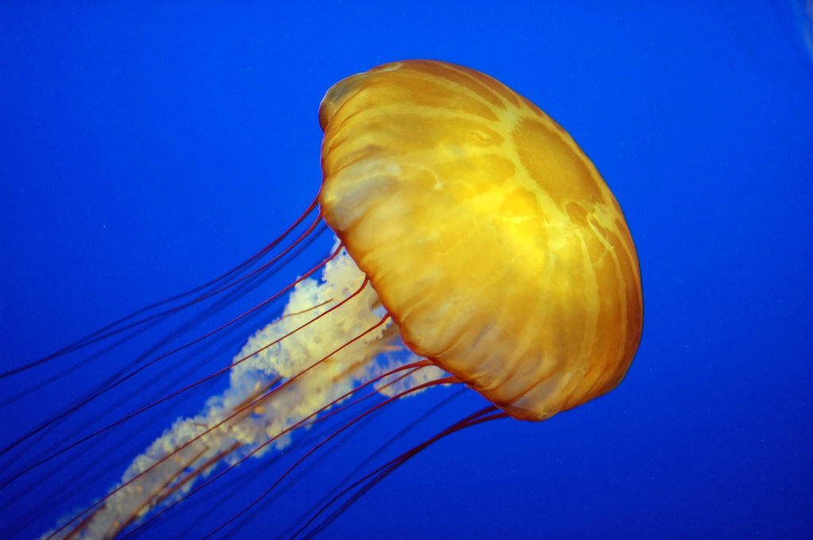
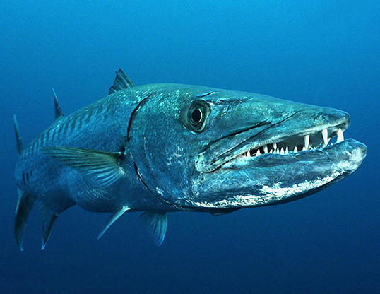

'Taxonomy' is the study of how organisms can be classified into different evolutionary groups.
It is a very important practice as it helps us understand how and when species emerged.
It also allows us to infer things about specific species simply by knowing the general properties of the group they belong to.
The reef has literally thousands of species.
But by familiarising with just a few groups, you can become skilled at identifying what sort of organisms you are seeing on the reef and their likely characteristics based on which taxonomic groups they belong to.
Animal Phyla
Coral reefs contain far more evolutionary groups than any other ecosystem on Earth. They contain 32 out of the 36 animal phyla (groups) that have been discovered. However, if you go diving on a reef, chances are every animal that you will encounter and see with your naked eye will belong to the following eight...


Annelids
These are the segmented worms. It is the same phylum as the worms that you find in your garden. 'Annelid' means "little ring". Annelids on coral reefs include polychaete worms, christmas tree worms and feather duster worms. Many species have frilly appendages which are mainly used for catching particles of food. Worms also often take refuge by drilling into the reef. This increases the structural complexity of reefs by opening up spaces that serve as microhabitats for small organisms.
Arthropods
Means "jointed feet". They possess a hard exoskeleton. In the ocean, arthropods are predomonantly crustaceans. They can be thought of as being like the insects of the sea. On reefs they include crabs, lobsters and shrimp. There are also many parasitic species that latch on to fish and feed on their tissues. However many crustaceans are also cleaners that help to remove parasites from fish that they will feed on.

Chordates
This is our own phylum. 'Chordata' means "having a cord". It encompasses all vertebrates (fish, mammals, reptires, birds and amphibians) as well as a few non-vertebrate relatives (e.g tunicates). The defining characteristic is that all members of this group have at least a basic spinal cord in at least one life stage.


Cnidarians
'Cnidaria' means "sea nettle". This is arguably the most keystone phylum on reefs as it includes coral. It also includes jellyfish, anemones and a few other groups. They all possess stinging cells and lack true brains, possessing only a basic net nervous system. They can exist as a single individual (e.g. jellyfish) or as colonies (e.g. corals).


Echinoderms
Means "porcupine skin". This group includes sea cucumbers, sea stars, brittle stars, sea urchins and feather stars. One defining feature is that they hav a water vascular system that they use for movement. They push water through a network of chambers which enables them to move. Echinoderms are very important grazers that help to keep algae levels down on the reef.


Molluscs
Means "soft-bodied". This group includes slugs, snails, bivalves (a.k.a. 'shellfish'), and cephalopods (i.e. octopus, squids and cuttlefish). One defining feature is the possession of a mantle cavity. That is an anatomical structure that contains most of their vital organs. Cephalopods are the most neurologically complex and intelligent invertebrates on the planet.


Platyhelminthes
Means "flatworm", which is also their lamen name. They are very primitive. Unlike annelids, they are not segmented. Their flat body allows gas and nutrients to be transported easily throughout their anatomy.


Porifera
Means "bearing pores". These are the sponges. They are the oldest living animal phylum. They are all sessile (attached to the sea floor) and have bodies full of pores and channels to allow water circulation so that they can effectively collect particles of food from the water. This helps to maintain optimum nutrient levels in the water, and are therefore important for improving the water quality on reefs. They also provide habitat for small organisms including juvenile fish and brittle stars. The cells of sponges have an unusual ability to transform to other types and relocate around the body.
Two Types of Fish
Bony Fish (Teleosts)
This group is extremely diverse and makes up the majority of fish on the planet. They have hard bony skeletons much like we do. They have conquored both the marine and freshwater environment. About 60% of species live in the ocean. They have a special organ called a swim bladder that is used to control buoyancy as they swim. The swim bladder contains air that gets pumped into a sack when pressure increases. This helps to keep the fish neutrally buoyant so that they don't sink.

Cartilagenous Fish (Elasmobranchs)
This group consists of all sharks and rays, as well as a few other groups such as the skates and guitar fish. About 95% of elasmobranch species are marine and they are exclusively carnivorous (with the exception of the bonnethead shark which can eat grass!). Unlike bony fish, elasmobranchs do not have swim bladders. Instead they control their buoyancy with a fatty substance called squalene. The deeper they go, the more squalene must be produced to stay neutrally buoyant. Elasmobranchs also have a special ability to detect electric signals in the water and this can help them detect prey and predators.

Benthic Components
The biological component of the seafloor of coral reefs consists primarily of these four groups...


Hard Corals
This group is the main reason why other animals come to the reef. They provide rigid structural support that isn't effectively provided by softer benthic organisms. Hard corals have a hard calcium carbonate skeleton (i.e. case). This skeleton is preserved after the living components of the polyps die.


Soft Corals
These corals only produce a small amount of calcium carbonate - not enough to produce a rigid skeleton. This means they are flexible and sway with the water movement. Although they do not provide as much structural support for most animals, they still act as important habitat for many and often have important antibacterial properties that help to keep the reef free of diseases.
Sponges
Sponges are the most primitive animals that are still alive. They obtain food by passing water through their system and holding onto organic matter that passes through. This is called filter feeding. This helps the reef as it keeps the nutrient levels in the water low enough for corals to thrive as it reduces the chance of algal takeover. They also provide habitat for a number of animals, such as brittle stars. They are also food for some organisms such as turtles. However, most organisms find them unappetising as sponges have evolved small calcium carbonate structures inside them to deter animals from eating them.

Seaweed
Macroalgae (a.k.a. 'seaweed') is often loosely referred to as a 'plant', even by scientists. But it is really only distantly related to 'true' plants. Seaweed is an important food source for many animals. However most coral reefs are suffering from seaweed takeover. Seaweed grows much faster than coral and often outcompetes it for space and sunlight. Seaweed can be grouped into green, brown or red macroalgae. Green algae is restricted to the very shallow waters.
There are a few other sessile organisms that grow on the sea floor. These include anemones, feather stars, tunicates and more.